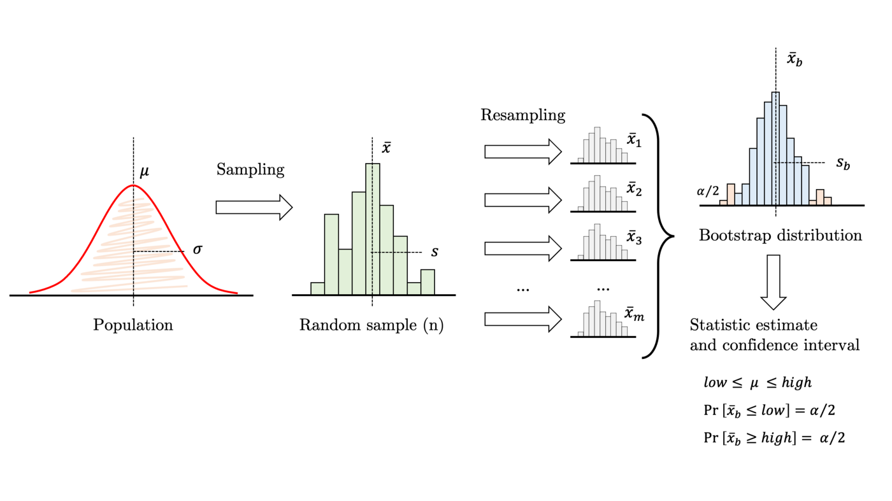
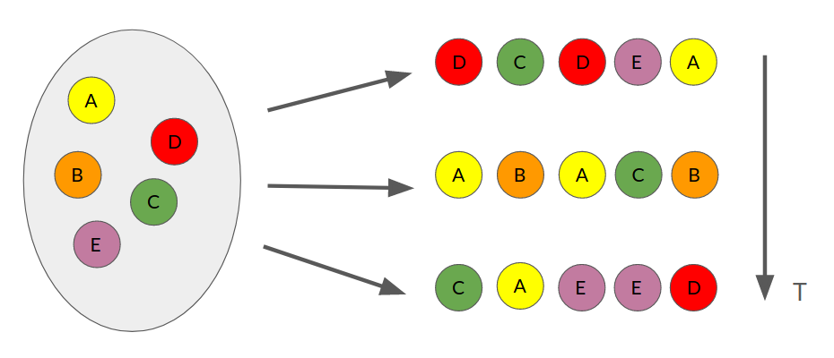

29. Intervalos de confianza con Bootstrap#
Podemos estimar la incerteza de un estimador de forma no-paramétrica utilizando muestreo tipo bootstrap
Esto consiste en tomar nuestro conjunto de datos de tamaño \(n\) y crear \(m\) nuevos conjuntos que “se le parezcan”. Luego se calcula el valor del estimador en los \(m\) conjuntos. Con esto obtenemos una distribución para el estimador como muestra el siguiente diagrama
{kind=link}
Podemos responder preguntas sobre el estadístico, calcular probabilidades y/o medir intervalos de confianza utilizando la distribución obtenida con bootstrap
Importante
Bootstrap es un procedimiento no parámetrico pues no requiere suponer que la muestra original sigue una distribución específica (e.g. normal)
Para crear los subconjuntos podríamos suponer independencia y utilizar muestreo con reemplazo. Esto consiste en tomar \(n\) muestras al azar permitiendo repeticiones, como muestra el siguiente diagrama
{kind=link}
Ver también
Si no es posible suponer indepedencia se puede realizar bootstrap basado en residuos y bootstrap dependiente. Puedes consultar más detalles sobre bootstrap aquí y acá
A continuación nos enfocaremos en el clásico muestreo con reemplazo y en como implementarlo en Python
%matplotlib inline
import pandas as pd
import numpy as np
import scipy.stats
import matplotlib.pyplot as plt
29.1. Implementación con Numpy y Scipy#
La función numpy.random.choice permite seleccionar con repetición a partir de un ndarray
Consideremos el ejemplo del modelo de regresión lineal sobre la base de datos de consumo de helados que hemos utilizado anteriormente. En este caso debemos remuestrar las parejas/tuplas \((x_i, y_i)\)
Utilicemos bootstrap para encontrar distribuciones de \(\theta_0\), \(\theta_1\) y el coeficiente de correlación \(r\)
Para calcular los parámetros y el coeficiente de correlación en cada muestreo utilizamos scipy.stats.linregress. El resultado para una regresión de consumo versus temperatura esto sería:
df = pd.read_csv('../linalg/data/helados.csv', header=0, index_col=0)
df.columns = ['consumo', 'ingreso', 'precio', 'temperatura']
x, y = df["temperatura"].values, df["consumo"].values
params = scipy.stats.linregress(x, y)
np.random.seed(0)
def muestreo_con_reemplazo(x, y):
n = len(x)
idx = np.random.choice(n, size=n, replace=True)
return x[idx], y[idx]
def bootstrap_linregress(x, y, m):
# Parámetros: t0, t1 y r
params = np.zeros(shape=(m, 3))
for j in range(m):
res = scipy.stats.linregress(*muestreo_con_reemplazo(x, y))
params[j, :] = [res.intercept, res.slope, res.rvalue]
return params
bootstrap_params = bootstrap_linregress(x, y, m=1000)
Y las distribuciones bootstrap de cada estadístico son:
fig, ax = plt.subplots(1, 3, figsize=(8, 3), tight_layout=True)
for ax_, dist, name in zip(ax, bootstrap_params.T, ['theta0', 'theta1', 'r']):
ax_.hist(dist, bins=20)
ax_.set_xlabel(name)
29.2. Intervalos de confianza empíricos#
Veamos más en detalle la distribución empírica de \(r\) obtenida usando bootstrap
En la figura de abajo tenemos
Linea roja: valor de \(r\) con la muestra original
Lineas punteadas negras: Intervalo de confianza empírico al 95%
Podemos calcular facilmente el intervalo de confianza de en un arreglo utilizando np.percentile
r_bootstrap = bootstrap_params[:, 2]
IC = np.percentile(r_bootstrap, [2.5, 97.5])
fig, ax = plt.subplots(figsize=(5, 3), tight_layout=True)
hist_val, hist_lim, _ = ax.hist(r_bootstrap, bins=20, density=True)
ax.plot([params.rvalue]*2, [0, np.max(hist_val)], 'r-', lw=2)
ax.plot([IC[0]]*2, [0, np.max(hist_val)], 'k--', lw=2)
ax.plot([IC[1]]*2, [0, np.max(hist_val)], 'k--', lw=2)
ax.set_xlabel('r')
print(f"Intervalo de confianza al 95% de r: {IC}")
Intervalo de confianza al 95% de r: [0.63497799 0.87744519]
De la figura podemos notar que el 95% de la distribución empírica esta sobre \(r=0.5\)
Nota
La distribución empírica de \(r\) no es simétrica. Por lo tanto aplicar un t-test parámetrico sobre \(r\) no hubiera sido correcto (se quiebra el supuesto de normalidad)
29.3. Visualizando la incerteza del modelo#
Usando la distribución empírica de los parámetros \(\theta_0\) y \(\theta_1\) podemos visualizar la incerteza de nuestro modelo de regresión lineal
x_test = np.linspace(20, 80, num=200)
def model(theta0, theta1, x):
return x*theta1 + theta0
dist_lines = model(bootstrap_params[:, 0], bootstrap_params[:, 1], x_test.reshape(-1, 1)).T
lower, median, upper = np.percentile(dist_lines, [1, 50, 99], axis=0)
En la figura de abajo tenemos
Puntos azules: Datos
Linea roja: Modelo de regresión lineal sobre la muestra original
Sombra rojo claro: Intervalo de confianza al 98% de la distribución predictiva de acuerdo a bootstrap
fig, ax = plt.subplots(figsize=(6, 3), tight_layout=True)
ax.set_ylabel('Consumo')
ax.set_xlabel('Temperatura')
ax.scatter(x, y, zorder=100, s=10, label='datos')
ax.plot(x_test, model(params.intercept, params.slope, x_test),
c='r', lw=2, label='mejor ajuste')
ax.fill_between(x_test, lower, upper, color='r', alpha=0.25, label='incerteza')
plt.legend();
Nota
La incertidumbre del modelo entrenado tiende a crecer a medida que nos alejamos de los datos